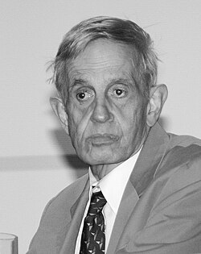

John Forbes Nash Jr. | |
|---|---|
Nash in the 2000s | |
| Born | June 13, 1928 Bluefield, West Virginia, U.S. |
| Died | May 23, 2015 (aged 86) |
| Education | |
| Known for | |
| Spouses |
|
| Children | 2 |
| Awards |
|
| Scientific career | |
| Fields |
|
| Institutions | |
| Thesis | Non-Cooperative Games (1950) |
| Albert W. Tucker | |
| Signature | |
John Forbes Nash Jr. (June 13, 1928 – May 23, 2015), known and published as John Nash, was an American mathematician who made fundamental contributions to game theory, real algebraic geometry, differential geometry, and partial differential equations.[1][2] Nash and fellow game theorists John Harsanyi and Reinhard Selten were awarded the 1994 Nobel Prize in Economics.[3] In 2015, he and Louis Nirenberg were awarded the Abel Prize for their contributions to the field of partial differential equations.
As a graduate student in the Princeton University Department of Mathematics, Nash introduced a number of concepts (including the Nash equilibrium and the Nash bargaining solution), which are now considered central to game theory and its applications in various sciences. In the 1950s, Nash discovered and proved the Nash embedding theorems by solving a system of nonlinear partial differential equations arising in Riemannian geometry. This work, also introducing a preliminary form of the Nash–Moser theorem, was later recognized by the American Mathematical Society with the Leroy P. Steele Prize for Seminal Contribution to Research. Ennio De Giorgi and Nash found, with separate methods, a body of results paving the way for a systematic understanding of elliptic and parabolic partial differential equations. Their De Giorgi–Nash theorem on the smoothness of solutions of such equations resolved Hilbert's nineteenth problem on regularity in the calculus of variations, which had been a well-known open problem for almost 60 years.
In 1959, Nash began showing signs of mental illness and spent several years at psychiatric hospitals being treated for schizophrenia. After 1970, his condition slowly improved, allowing him to return to academic work by the mid-1980s.[4]
Nash's life was the subject of Sylvia Nasar's 1998 biographical book A Beautiful Mind, and his struggles with his illness and his recovery became the basis for a 2001 film of the same name directed by Ron Howard, in which Nash was portrayed by Russell Crowe.[5][6][7][8]
John Forbes Nash Jr. was born on June 13, 1928, in Bluefield, West Virginia. His father, John Forbes Nash Sr., was an electrical engineer for the Appalachian Electric Power Company. His mother, Margaret Virginia (née Martin) Nash, had been a schoolteacher before she was married. He was baptized in the Episcopal Church.[9] His younger sister Martha was born in 1930.[10]
Nash attended kindergarten and public school, and he learned from books provided by his parents and grandparents.[10] Nash's parents pursued opportunities to supplement their son's education, and arranged for him to take advanced mathematics courses at nearby Bluefield College (now Bluefield University) during his final year of high school. He attended Carnegie Institute of Technology (which later became Carnegie Mellon University) through a full benefit of the George Westinghouse Scholarship, initially majoring in chemical engineering. He switched to a chemistry major and eventually, at the advice of his teacher John Lighton Synge, to mathematics. After graduating in 1948, with both bachelor of science and master of science degrees in mathematics, Nash accepted a fellowship to Princeton University, where he pursued further graduate studies in mathematics and sciences.[10]
Nash's adviser and former Carnegie Tech professor Richard Duffin wrote a letter of recommendation for Nash's entrance to Princeton, stating, "He is a mathematical genius."[11][12] Nash was also accepted at Harvard University, the University of Chicago, and the University of Michigan. However, the chairman of the mathematics department at Princeton, Solomon Lefschetz, offered him the John S. Kennedy fellowship, convincing Nash that Princeton valued him more.[13] Further, he considered Princeton more favorably because of its proximity to his family in Bluefield.[10] At Princeton, he began work on his equilibrium theory, later known as the Nash equilibrium.[14]

Nash did not publish extensively, although many of his papers are considered landmarks in their fields.[15] As a graduate student at Princeton, he made foundational contributions to game theory and real algebraic geometry. As a postdoctoral fellow at MIT, Nash turned to differential geometry. Although the results of Nash's work on differential geometry are phrased in a geometrical language, the work is almost entirely to do with the mathematical analysis of partial differential equations.[16] After proving his two isometric embedding theorems, Nash turned to research dealing directly with partial differential equations, where he discovered and proved the De Giorgi–Nash theorem, thereby resolving one form of Hilbert's nineteenth problem.
In 2011, the National Security Agency declassified letters written by Nash in the 1950s, in which he had proposed a new encryption–decryption machine.[17] The letters show that Nash had anticipated many concepts of modern cryptography, which are based on computational hardness.[18]
Nash earned a PhD in 1950 with a 28-page dissertation on noncooperative games.[19][20] The thesis, written under the supervision of doctoral advisor Albert W. Tucker, contained the definition and properties of the Nash equilibrium, a crucial concept in noncooperative games. A version of his thesis was published a year later in the Annals of Mathematics.[21] In the early 1950s, Nash carried out research on a number of related concepts in game theory, including the theory of cooperative games.[22] For his work, Nash was one of the recipients of the Nobel Memorial Prize in Economic Sciences in 1994.
In 1949, while still a graduate student, Nash found a new result in the mathematical field of real algebraic geometry.[23] He announced his theorem in a contributed paper at the International Congress of Mathematicians in 1950, although he had not yet worked out the details of its proof.[24] Nash's theorem was finalized by October 1951, when Nash submitted his work to the Annals of Mathematics.[25] It had been well-known since the 1930s that every closed smooth manifold is diffeomorphic to the zero set of some collection of smooth functions on Euclidean space. In his work, Nash proved that those smooth functions can be taken to be polynomials.[26] This was widely regarded as a surprising result,[23] since the class of smooth functions and smooth manifolds is usually far more flexible than the class of polynomials. Nash's proof introduced the concepts now known as Nash function and Nash manifold, which have since been widely studied in real algebraic geometry.[26][27] Nash's theorem itself was famously applied by Michael Artin and Barry Mazur to the study of dynamical systems, by combining Nash's polynomial approximation together with Bézout's theorem.[28][29]
During his postdoctoral position at MIT, Nash was eager to find high-profile mathematical problems to study.[30] From Warren Ambrose, a differential geometer, he learned about the conjecture that any Riemannian manifold is isometric to a submanifold of Euclidean space. Nash's results proving the conjecture are now known as the Nash embedding theorems, the second of which Mikhael Gromov has called "one of the main achievements of mathematics of the 20th century".[31]
Nash's first embedding theorem was found in 1953.[30] He found that any Riemannian manifold can be isometrically embedded in a Euclidean space by a continuously differentiable mapping.[32] Nash's construction allows the codimension of the embedding to be very small, with the effect that in many cases it is logically impossible that a highly-differentiable isometric embedding exists. (Based on Nash's techniques, Nicolaas Kuiper soon found even smaller codimensions, with the improved result often known as the Nash–Kuiper theorem.) As such, Nash's embeddings are limited to the setting of low differentiability. For this reason, Nash's result is somewhat outside the mainstream in the field of differential geometry, where high differentiability is significant in much of the usual analysis.[33][34]
However, the logic of Nash's work has been found to be useful in many other contexts in mathematical analysis. Starting with work of Camillo De Lellis and László Székelyhidi, the ideas of Nash's proof were applied for various constructions of turbulent solutions of the Euler equations in fluid mechanics.[35][36] In the 1970s, Mikhael Gromov developed Nash's ideas into the general framework of convex integration,[34] which has been (among other uses) applied by Stefan Müller and Vladimír Šverák to construct counterexamples to generalized forms of Hilbert's nineteenth problem in the calculus of variations.[37]
Nash found the construction of smoothly differentiable isometric embeddings to be unexpectedly difficult.[30] However, after around a year and a half of intensive work, his efforts succeeded, thereby proving the second Nash embedding theorem.[38] The ideas involved in proving this second theorem are largely separate from those used in proving the first. The fundamental aspect of the proof is an implicit function theorem for isometric embeddings. The usual formulations of the implicit function theorem are inapplicable, for technical reasons related to the loss of regularity phenomena. Nash's resolution of this issue, given by deforming an isometric embedding by an ordinary differential equation along which extra regularity is continually injected, is regarded as a fundamentally novel technique in mathematical analysis.[39] Nash's paper was awarded the Leroy P. Steele Prize for Seminal Contribution to Research in 1999, where his "most original idea" in the resolution of the loss of regularity issue was cited as "one of the great achievements in mathematical analysis in this century".[16] According to Gromov:[31]
You must be a novice in analysis or a genius like Nash to believe anything like that can be ever true and/or to have a single nontrivial application.
Due to Jürgen Moser's extension of Nash's ideas for application to other problems (notably in celestial mechanics), the resulting implicit function theorem is known as the Nash–Moser theorem. It has been extended and generalized by a number of other authors, among them Gromov, Richard Hamilton, Lars Hörmander, Jacob Schwartz, and Eduard Zehnder.[34][39] Nash himself analyzed the problem in the context of analytic functions.[40] Schwartz later commented that Nash's ideas were "not just novel, but very mysterious," and that it was very hard to "get to the bottom of it."[30] According to Gromov:[31]
Nash was solving classical mathematical problems, difficult problems, something that nobody else was able to do, not even to imagine how to do it. ... what Nash discovered in the course of his constructions of isometric embeddings is far from 'classical' – it is something that brings about a dramatic alteration of our understanding of the basic logic of analysis and differential geometry. Judging from the classical perspective, what Nash has achieved in his papers is as impossible as the story of his life ... [H]is work on isometric immersions ... opened a new world of mathematics that stretches in front of our eyes in yet unknown directions and still waits to be explored.
While spending time at the Courant Institute in New York City, Louis Nirenberg informed Nash of a well-known conjecture in the field of elliptic partial differential equations.[41] In 1938, Charles Morrey had proved a fundamental elliptic regularity result for functions of two independent variables, but analogous results for functions of more than two variables had proved elusive. After extensive discussions with Nirenberg and Lars Hörmander, Nash was able to extend Morrey's results, not only to functions of more than two variables, but also to the context of parabolic partial differential equations.[42] In his work, as in Morrey's, uniform control over the continuity of the solutions to such equations is achieved, without assuming any level of differentiability on the coefficients of the equation. The Nash inequality was a particular result found in the course of his work (the proof of which Nash attributed to Elias Stein), which has been found useful in other contexts.[43][44][45][46]
Soon after, Nash learned from Paul Garabedian, recently returned from Italy, that the then-unknown Ennio De Giorgi had found nearly identical results for elliptic partial differential equations.[41] De Giorgi and Nash's methods had little to do with one another, although Nash's were somewhat more powerful in applying to both elliptic and parabolic equations. A few years later, inspired by De Giorgi's method, Jürgen Moser found a different approach to the same results, and the resulting body of work is now known as the De Giorgi–Nash theorem or the De Giorgi–Nash–Moser theory (which is distinct from the Nash–Moser theorem). De Giorgi and Moser's methods became particularly influential over the next several years, through their developments in the works of Olga Ladyzhenskaya, James Serrin, and Neil Trudinger, among others.[47][48] Their work, based primarily on the judicious choice of test functions in the weak formulation of partial differential equations, is in strong contrast to Nash's work, which is based on analysis of the heat kernel. Nash's approach to the De Giorgi–Nash theory was later revisited by Eugene Fabes and Daniel Stroock, initiating the re-derivation and extension of the results originally obtained from De Giorgi and Moser's techniques.[43][49]
From the fact that minimizers to many functionals in the calculus of variations solve elliptic partial differential equations, Hilbert's nineteenth problem (on the smoothness of these minimizers), conjectured almost sixty years prior, was directly amenable to the De Giorgi–Nash theory. Nash received instant recognition for his work, with Peter Lax describing it as a "stroke of genius".[41] Nash would later speculate that had it not been for De Giorgi's simultaneous discovery, he would have been a recipient of the prestigious Fields Medal in 1958.[10] Although the medal committee's reasoning is not fully known, and was not purely based on questions of mathematical merit,[50] archival research has shown that Nash placed third in the committee's vote for the medal, after the two mathematicians (Klaus Roth and René Thom) who were awarded the medal that year.[51]
Although Nash's mental illness first began to manifest in the form of paranoia, his wife later described his behavior as erratic. Nash thought that all men who wore red ties were part of a "crypto-communist party" who were secretly conspiring against him.[52] He mailed letters to embassies in Washington, D.C., declaring that he was establishing a government.[4][53] Nash signed these letters "John Nash, Emperor of Antarctica", a position he believed he was in line to inherit.[52] Nash's psychological issues crossed into his professional life when he gave an American Mathematical Society lecture at Columbia University in early 1959 in which he originally intended to present proof of the Riemann hypothesis. Instead the lecture was so incoherent that colleagues in the audience immediately realized that something was wrong.[54]
In April 1959, Nash was admitted to McLean Hospital for one month. Based on his paranoid, persecutory delusions, hallucinations, and increasing asociality, he was diagnosed with schizophrenia.[55][56] In 1961, Nash was admitted to the New Jersey State Hospital at Trenton.[57] Over the next nine years, he spent intervals of time in psychiatric hospitals, where he received both antipsychotic medications and insulin shock therapy.[56][58]
Although he sometimes took prescribed medication, Nash later wrote that he did so only under pressure. According to Nash, the film A Beautiful Mind inaccurately implied he was taking atypical antipsychotics. He attributed the depiction to the screenwriter who was worried about the film encouraging people with mental illness to stop taking their medication.[59]
Nash did not take any medication after 1970, nor was he committed to a hospital ever again.[60] Nash recovered gradually.[61] Encouraged by his then former wife, Alicia Lardé, Nash lived at home and spent his time in the Princeton mathematics department where his eccentricities were accepted even when his mental condition was poor. Lardé credits his recovery to maintaining "a quiet life" with social support.[4]
Nash dated the start of what he termed "mental disturbances" to the early months of 1959, when his wife was pregnant. He described a process of change "from scientific rationality of thinking into the delusional thinking characteristic of persons who are psychiatrically diagnosed as 'schizophrenic' or 'paranoid schizophrenic'".[10] For Nash, this included seeing himself as a messenger or having a special function of some kind, of having supporters and opponents and hidden schemers, along with a feeling of being persecuted and searching for signs representing divine revelation.[62] During his psychotic phase, Nash also referred to himself in the third person as "Johann von Nassau".[63] Nash suggested his delusional thinking was related to his unhappiness, his desire to be recognized, and his characteristic way of thinking, saying, "I wouldn't have had good scientific ideas if I had thought more normally." He also said, "If I felt completely pressureless I don't think I would have gone in this pattern".[64]
Nash reported that he started hearing voices in 1964, then later engaged in a process of consciously rejecting them.[65] He only renounced his "dream-like delusional hypotheses" after a prolonged period of involuntary commitment in mental hospitals—"enforced rationality". Upon doing so, he was temporarily able to return to productive work as a mathematician. By the late 1960s, he relapsed.[66] Eventually, he "intellectually rejected" his "delusionally influenced" and "politically oriented" thinking as a waste of effort.[10] In 1995, he said that he did not realize his full potential due to nearly 30 years of mental illness.[67]
Nash wrote in 1994:
I spent times of the order of five to eight months in hospitals in New Jersey, always on an involuntary basis and always attempting a legal argument for release. And it did happen that when I had been long enough hospitalized that I would finally renounce my delusional hypotheses and revert to thinking of myself as a human of more conventional circumstances and return to mathematical research. In these interludes of, as it were, enforced rationality, I did succeed in doing some respectable mathematical research. Thus there came about the research for "Le problème de Cauchy pour les équations différentielles d'un fluide général"; the idea that Prof. Heisuke Hironaka called "the Nash blowing-up transformation"; and those of "Arc Structure of Singularities" and "Analyticity of Solutions of Implicit Function Problems with Analytic Data".
But after my return to the dream-like delusional hypotheses in the later 60s I became a person of delusionally influenced thinking but of relatively moderate behavior and thus tended to avoid hospitalization and the direct attention of psychiatrists.
Thus further time passed. Then gradually I began to intellectually reject some of the delusionally influenced lines of thinking which had been characteristic of my orientation. This began, most recognizably, with the rejection of politically oriented thinking as essentially a hopeless waste of intellectual effort. So at the present time I seem to be thinking rationally again in the style that is characteristic of scientists.[10]
In 1978, Nash was awarded the John von Neumann Theory Prize for his discovery of non-cooperative equilibria, now called Nash Equilibria. He won the Leroy P. Steele Prize in 1999.
In 1994, he received the Nobel Memorial Prize in Economic Sciences (along with John Harsanyi and Reinhard Selten) for his game theory work as a Princeton graduate student.[68] In the late 1980s, Nash had begun to use email to gradually link with working mathematicians who realized that he was the John Nash and that his new work had value. They formed part of the nucleus of a group that contacted the Bank of Sweden's Nobel award committee and were able to vouch for Nash's mental health and ability to receive the award.[69]
Nash's later work involved ventures in advanced game theory, including partial agency, which show that, as in his early career, he preferred to select his own path and problems. Between 1945 and 1996, he published 23 scientific papers.
Nash has suggested hypotheses on mental illness. He has compared not thinking in an acceptable manner, or being "insane" and not fitting into a usual social function, to being "on strike" from an economic point of view. He advanced views in evolutionary psychology about the potential benefits of apparently nonstandard behaviors or roles.[70]
Nash criticized Keynesian ideas of monetary economics which allowed for a central bank to implement monetary policies.[71] He proposed a standard of "Ideal Money" pegged to an "industrial consumption price index" which was more stable than "bad money." He noted that his thinking on money and the function of monetary authority paralleled that of economist Friedrich Hayek.[72][71]
Nash received an honorary degree, Doctor of Science and Technology, from Carnegie Mellon University in 1999, an honorary degree in economics from the University of Naples Federico II in 2003,[73] an honorary doctorate in economics from the University of Antwerp in 2007, an honorary doctorate of science from the City University of Hong Kong in 2011,[74] and was keynote speaker at a conference on game theory.[75] Nash also received honorary doctorates from two West Virginia colleges: the University of Charleston in 2003 and West Virginia University Tech in 2006. He was a prolific guest speaker at a number of events, such as the Warwick Economics Summit in 2005, at the University of Warwick.
Nash was elected to the American Philosophical Society in 2006[76] and became a fellow of the American Mathematical Society in 2012.[77]
On May 19, 2015, a few days before his death, Nash, along with Louis Nirenberg, was awarded the 2015 Abel Prize by King Harald V of Norway at a ceremony in Oslo.[78]
In 1951, the Massachusetts Institute of Technology (MIT) hired Nash as a C. L. E. Moore instructor in the mathematics faculty. About a year later, Nash began a relationship with Eleanor Stier, a nurse he met while admitted as a patient. They had a son, John David Stier,[74] but Nash left Stier when she told him of her pregnancy.[79] The film based on Nash's life, A Beautiful Mind, was criticized during the run-up to the 2002 Oscars for omitting this aspect of his life. He was said to have abandoned her based on her social status, which he thought to have been beneath his.[80]
In Santa Monica, California, in 1954, while in his 20s, Nash was arrested for indecent exposure in a sting operation targeting gay men.[81] Although the charges were dropped, he was stripped of his top-secret security clearance and fired from RAND Corporation, where he had worked as a consultant.[82]
Not long after breaking up with Stier, Nash met Alicia Lardé Lopez-Harrison, a naturalized U.S. citizen from El Salvador. Lardé was a graduate of MIT with a major in physics.[10] They married in February 1957. Although Nash was an atheist,[83] the ceremony was performed in an Episcopal church.[84] In 1958, Nash was appointed to a tenured position at MIT, and his first signs of mental illness soon became evident. He resigned his position at MIT in the spring of 1959.[10] His son, John Charles Martin Nash, was born a few months later. The child was not named for a year[74] because Alicia felt that Nash should have a say in choosing the name. Due to the stress of dealing with his illness, Nash and Lardé divorced in 1963. After his final hospital discharge in 1970, Nash lived in Lardé's house as a boarder. This stability seemed to help him, and he learned how to consciously discard his paranoid delusions.[85] Princeton allowed him to audit classes. He continued to work on mathematics and was eventually allowed to teach again. In the 1990s, Lardé and Nash resumed their relationship, remarrying in 2001.
Their son John Charles Martin Nash was diagnosed with schizophrenia while in high school and did not graduate. Nonetheless he later earned a PhD in mathematics from Rutgers University.[84]
On May 23, 2015, Nash and his wife died in a car crash on the New Jersey Turnpike in Monroe Township, New Jersey, while returning home from receiving the Abel Prize in Norway. The driver of the taxicab in which they were riding from Newark Airport lost control of the cab and struck a guardrail. Because neither were wearing seatbelts, both passengers were ejected and killed.[86] At the time of his death, Nash was a longtime resident of New Jersey. He was survived by two sons, John Charles Martin Nash, who lived with his parents at the time of their death, and elder child John Stier.[87]
Following his death, obituaries appeared in scientific and popular media throughout the world. In addition to their obituary for Nash,[88] The New York Times published an article containing quotes from Nash that had been assembled from media and other published sources. The quotes consisted of Nash's reflections on his life and achievements.[89]
At Princeton in the 1970s, Nash became known as "The Phantom of Fine Hall"[90] (Princeton's mathematics center), a shadowy figure who would scribble arcane equations on blackboards in the middle of the night.
He is referred to in a novel set at Princeton, The Mind-Body Problem, 1983, by Rebecca Goldstein.[4]
Sylvia Nasar's biography of Nash, A Beautiful Mind, was published in 1998. A film by the same name was released in 2001, directed by Ron Howard with Russell Crowe playing Nash, and Jennifer Connelly playing Alicia; it won four Academy Awards, including Best Picture. For his performance as Nash, Crowe won the Golden Globe Award for Best Actor – Motion Picture Drama at the 59th Golden Globe Awards and the BAFTA Award for Best Actor at the 55th British Academy Film Awards. Crowe was nominated for the Academy Award for Best Actor at the 74th Academy Awards. However, the film wrongly depicts Nash being cured from schizophrenia due to the intervention of doctors and taking his medication, which is historically false [91]
Four of Nash's game-theoretic papers (Nash 1950a, 1950b, 1951, 1953) and three of his pure mathematics papers (Nash 1952b, 1956, 1958) were collected in the following:
A Beautiful Mind's John Nash is nowhere near as complicated as the real one.
Contrary to widespread references to Nash's "numerous homosexual liaisons", he was not gay. While he had several emotionally intense relationships with other men when he was in his early 20s, I never interviewed anyone who claimed, much less provided evidence, that Nash ever had sex with another man. Nash was arrested in a police trap in a public lavatory in Santa Monica in 1954, at the height of the McCarthy hysteria. The military think tank where he was a consultant, stripped him of his top-secret security clearance and fired him ... The charge – indecent exposure – was dropped.
West Windsor, N.J.: John Forbes Nash Jr., whose life is chronicled in the Oscar-nominated movie A Beautiful Mind, could lose his home if the township picks one of its proposals to replace a nearby bridge.
{kind=link}
_signature.png){kind=link}
{kind=link}
{kind=link}